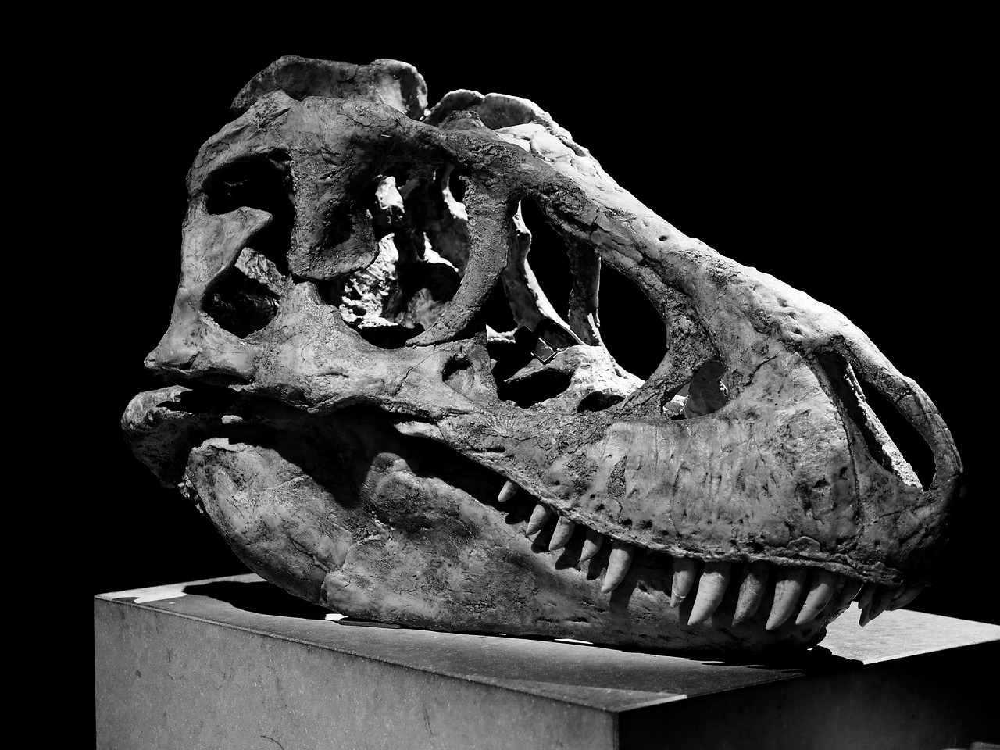
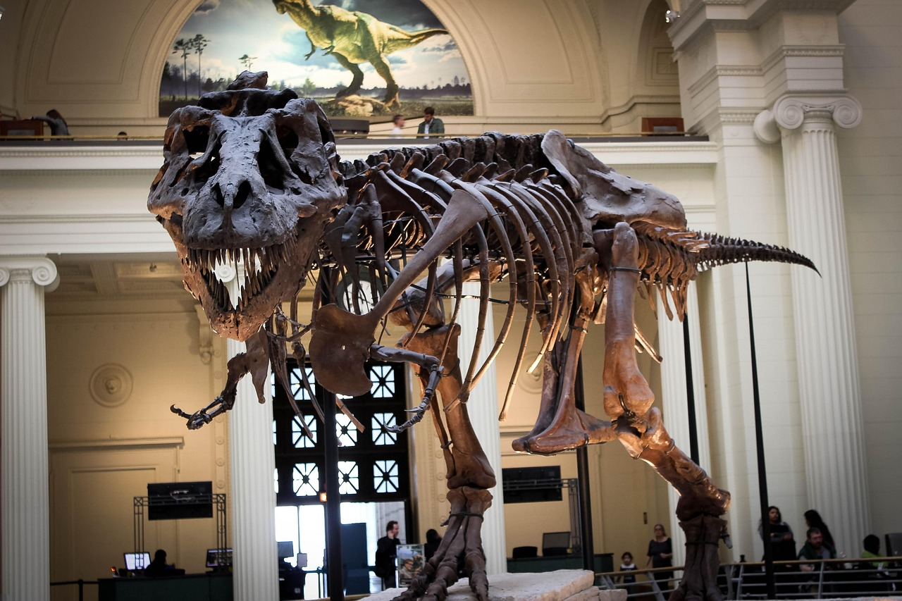

A small, locally owned and operated business that opened over 20 years ago. We started serving just tea and biscuits to now being able to offer a small variety of dishes for a lunchtime menu. We pride ourselves in our continued use of not just high quality, locally sourced fresh ingredients but also sustainable cooking methods.